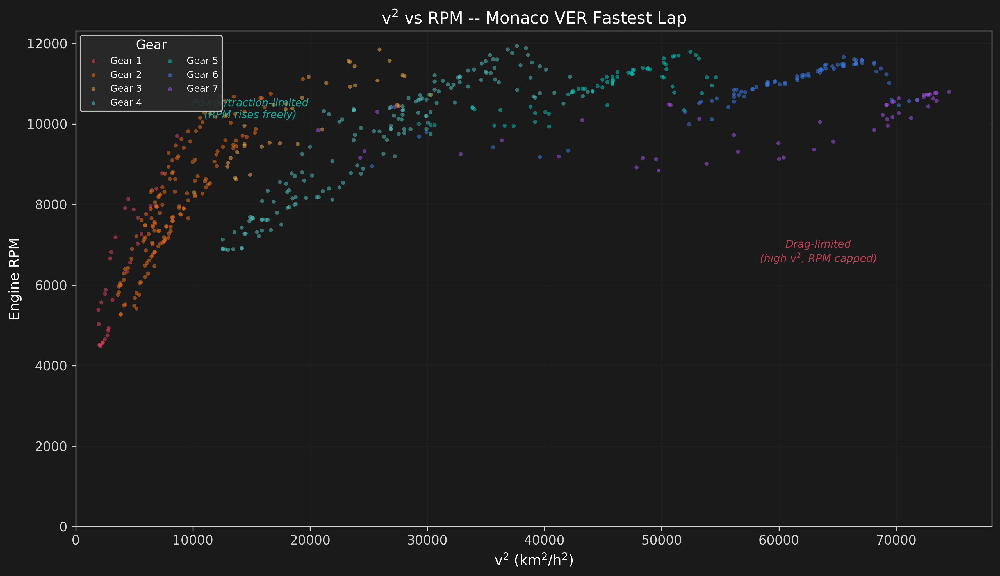
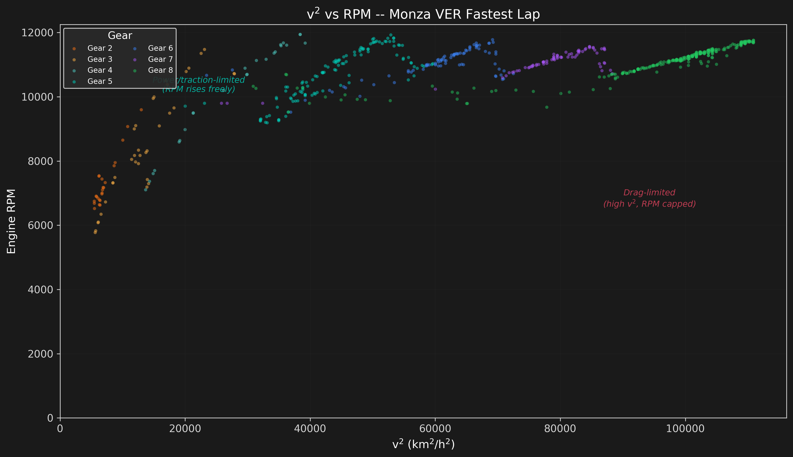

Powertrain & Aero Interaction
The Drag Wall
Aerodynamic drag grows with the square of velocity. This means that at high speeds, the engine must divert an increasing fraction of its power just to overcome air resistance rather than accelerate the car. The point where aerodynamic drag equals the available tractive force is the drag-limited regime -- no amount of gearing or RPM can increase speed further.
This analysis plots velocity-squared (v2, proportional to aerodynamic drag force) against engine RPM, colored by gear selection. By comparing a low-speed circuit (Monaco) with a high-speed circuit (Monza), we can see how the powertrain and aero systems interact in different aerodynamic environments.
Monaco: Low-Speed, High-Downforce
Monaco is dominated by slow corners and short straights. The car never reaches speeds above ~280 km/h, meaning aerodynamic drag is relatively low. The scatter shows wide RPM variation at low v2 values -- the engine can freely spin through the gears because air resistance is not the limiting factor. This is the power/traction-limited regime.

Monza: High-Speed, Low-Downforce
Monza is the opposite extreme. Long straights and high-speed corners push the car past 340 km/h. The v2 vs RPM scatter tells a different story: at high v2 values, the RPM curve flattens. The engine can no longer increase RPM because the aerodynamic drag wall has been reached. This is the drag-limited regime.
The gear clusters are more distinct at Monza -- each gear has a narrower v2 range before the driver must upshift to keep the engine in its power band. The highest gears (7-8) show the characteristic "drag ceiling" where v2 plateaus.

Reading the Plots
Three regimes are visible in these scatter plots:
- Power/traction-limited (lower-left): Low v2, wide RPM range. The engine is limited by how much power the tires can put down, not by air resistance. Typical of low-speed corners and acceleration zones.
- Gear-limited (mid-range): Each gear traces a diagonal band as v2 and RPM rise together. The driver shifts at the RPM limit of each gear.
- Drag-limited (upper-right): High v2, RPM flattens. The engine is at full throttle but cannot overcome the drag wall. Visible only at Monza-style high-speed circuits.
The transition between power-limited and drag-limited regimes shifts with the car's aerodynamic setup. A high-downforce Monaco setup increases drag at every speed, pulling the drag wall to a lower v2. The Monza low-drag setup pushes the drag wall outward.
Key Findings
- Drag is the ultimate speed limiter: At Monza, the drag wall caps speed around 340 km/h. Without aero drag, the same gearing would allow speeds over 400 km/h.
- v2 scaling: Doubling speed quadruples drag force. The engine power must grow as v3 to overcome this -- a fundamentally challenging scaling relationship.
- Circuit-dependent regime: Monaco operates entirely in the power-limited regime. Monza spans both power-limited and drag-limited regimes. An F1 car's setup must balance between these two worlds.
- Gear spread: Monaco uses gears 1-6 predominantly; Monza uses 4-8. The v2 overlap between adjacent gears shows where gear ratios are optimized for the track.
Limitations
- RPM data includes both acceleration and coasting phases -- not all points represent full-throttle conditions.
- Engine power curves are not directly available from FastF1; we use RPM as a proxy for engine state.
- Gear ratios are inferred from telemetry (nGear channel) and may not reflect exact FIA gear ratio regulations.
- The v2 proxy does not distinguish between drag force components (profile drag, induced drag, cooling drag).
- Driver gear selection strategy (short-shifting, lift-and-coast) adds variance to the scatter.
- Single lap per circuit shown; multi-lap aggregation would improve statistical robustness.